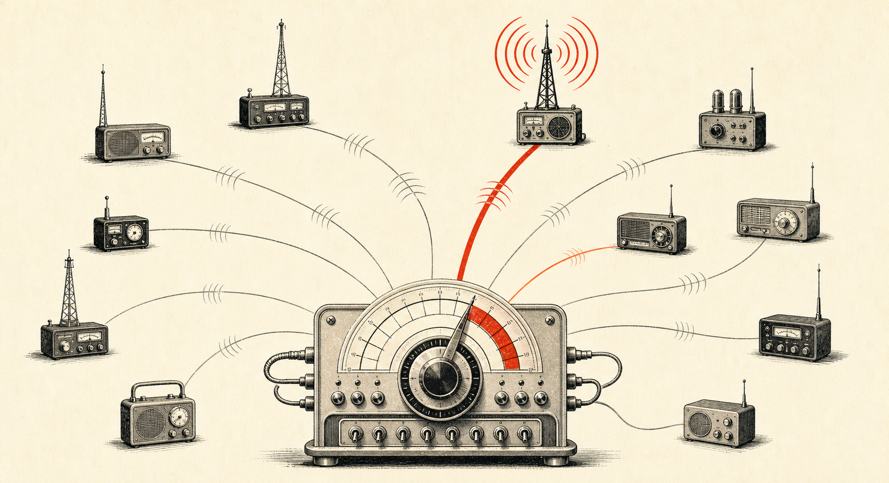
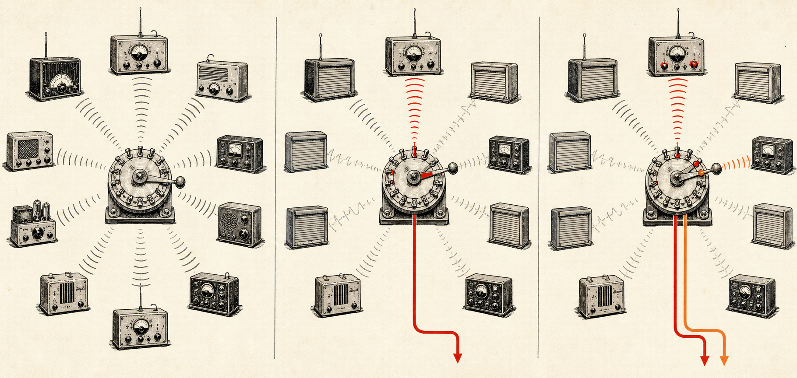
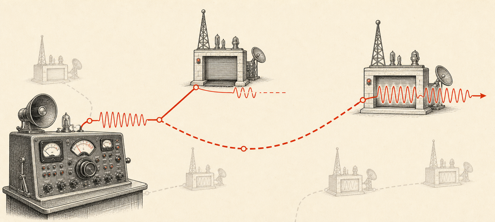

Ten stations. One model. No single point of waiting.
If ten people put DeepSeek or Qwen3.6 on the air, which GPU gets your prompt? The answer is not “the fastest one, forever.” It is a small, measured decision made again for every request.

Quick answer. RogerAI first removes stations that cannot satisfy the request. It then scores the healthy remainder by reliability, request-aware speed, price, live load, and measured capacity. From the reliable top band it compares two candidates and sends the request to the less-loaded one. When that station fills, its score falls automatically, so the next request moves elsewhere.
A model name is a frequency. A station is one operator actually serving it.
Ten stations can all carry deepseek-v4-flash; to your app they are
one OpenAI-compatible endpoint. The interesting work happens between those two facts.
What happens when requests arrive together?
This plate is a deterministic illustration, not live market data. All ten stations serve the same model. Their signal combines recent serving proof, success, speed, latency, trust, and congestion. Press “next request” to walk the load across the band.
One frequency, ten stations.
- A1920 / 2
- B7890 / 4
- C3870 / 1
- D9840 / 2
- E2810 / 1
- F6770 / 2
- G4740 / 1
- H8710 / 4
- J5680 / 2
- K0630 / 1
Strong recent evidence and open capacity.

Does every station enter the race?
No. Scoring starts only after hard constraints. The model and modality must match. The station must be heartbeat-fresh, not banned, within your input/output price caps, above any minimum-speed requirement, and inside a private-band or grant allow-list when one applies. Confidential requests stay on confidential-capable stations.
A station with a sustained failed-canary streak is removed from routing entirely. One successful probe resets that streak and puts it back in contention. Availability is dynamic; a machine is not branded “bad” forever because it rebooted once.
What does “best signal” actually mean?
The public signal is a readable summary. Selection uses a request-local score:
- Reliability
- Recent canary proof, organic success, and trust multiply. A cheap or fast station cannot buy back repeated failure.
- Speed fit
- Throughput saturates once it is fast enough. Prompt size is folded into effective time-to-first-token, so long prompts avoid weak prefill hardware.
- Price
- A bounded preference inside your allowed range. Free is neutral—not an infinite advantage that lets a flaky station win.
- Load
1 / (1 + inflight / capacity). A four-slot rig absorbs more work before congestion lowers its score than a one-slot laptop.- Exploration
- A small, self-extinguishing lift lets newly verified capacity earn real evidence instead of starving behind incumbents forever.
Why not always pick the number-one station?
Because the number-one station would become a magnet. RogerAI builds a reliable top band—candidates close enough to the best score—then samples two, weighted toward merit, and picks the one with lower normalized load. This is the power-of-two-choices result: two tiny comparisons avoid a global queue.
Suppose A1 and B7 are the strongest stations. User one may land on A1. Its inflight count rises immediately, reducing its load factor. User two can land on B7 before A1 is “down.” When A1 reaches capacity, it naturally falls behind other healthy stations. The route bends; the API does not.
What if the chosen station fails mid-request?
The client re-discovers and ranks an alternative that still satisfies every original constraint: exact model, confidentiality, minimum speed, price ceilings, access rules. It does not silently downgrade the model or cross a privacy boundary. Failed work releases its credit hold; completed work is settled against signed token lineage.
This is also why routing is not DNS round-robin. RogerAI knows the request, the offer, the current load, the measured serving evidence, and the price lock. The next station is compatible by construction.

What changes when a model gains ten operators?
Supply becomes graceful. One home rig can sleep, another can fill, a new one can prove itself, and a larger one can carry long prompts. Users still ask for one model name. Operators remain independent. The model becomes more available without becoming owned by one data center.
That is the point of the radio metaphor: a band is valuable because many stations can carry it. Signal decides who should answer now; open compatibility means someone else can answer next.
Frequently asked questions
- Does RogerAI always choose the station with the highest signal?
- No. Signal is a public summary. The router first applies hard request constraints, scores healthy candidates with request-aware speed, reliability, price, capacity, and load, then uses power-of-two choices inside a reliable top band.
- What happens when the strongest station is full?
- Its capacity-normalized load rises and its routing score falls. A concurrent request is directed to another healthy station that still satisfies the same model, price, speed, privacy, and access constraints.
- Can a small home GPU ever receive traffic?
- Yes. Capacity normalization prevents a laptop from being judged like a four-GPU rig, while canary-gated exploration gives newly verified stations a chance to build real serving evidence.
- Can a cheaper station beat a more reliable one?
- Price is only a bounded modifier inside the user's allowed range. Reliability is multiplicative, so repeated failure cannot be erased by being free or unusually cheap.
- Does failover silently change my model?
- No. Failover re-selects an alternative that satisfies the original routing constraints and exact requested model. It never silently crosses confidentiality, price, or minimum-speed boundaries.
roger share <model> · roger use <model>